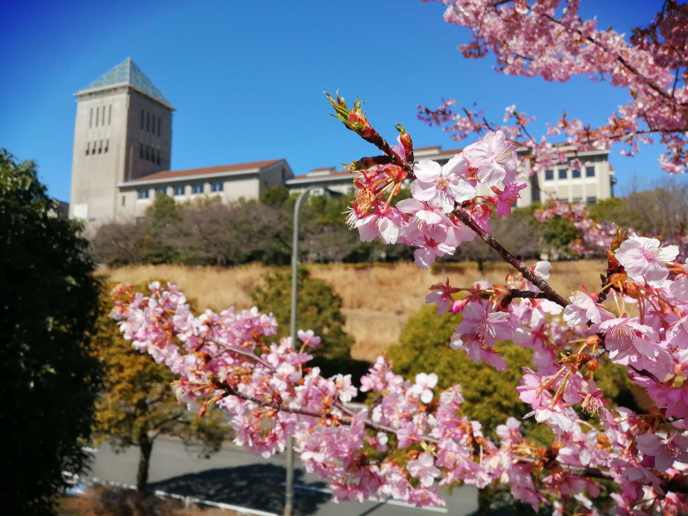
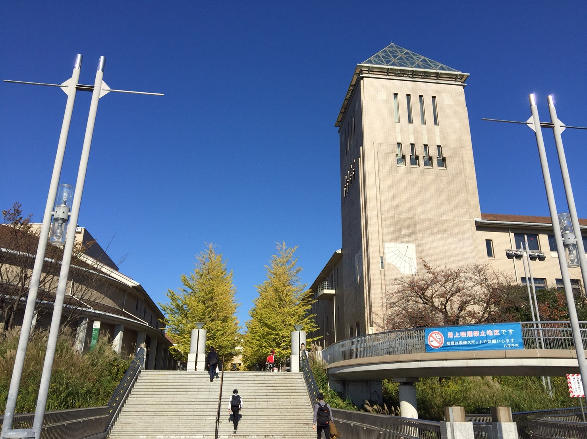
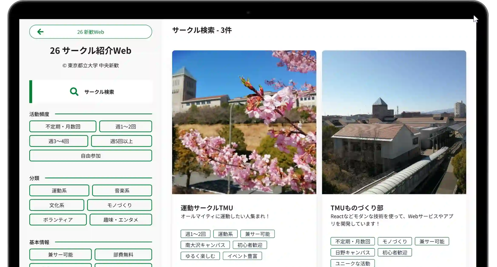

東京都立大学 新歓サイト 2026
新歓イベント一覧
スマホをお使いの場合、表は横にスクロールします。| 日にち | イベント | 場所 | 時間 | 主催 |
|---|---|---|---|---|
| 3/24 (火) ~ 3/26 (木) |
新入生歓迎講演会 | 1号館120教室 | 10:00~11:30 | 学生自治会 |
| 懇親会 | 1号館120教室 | 14:00〜17:00 | 生協学生委員会 | |
| 3/31 (火) | 新歓祭 | 生協食堂 | 15:00~17:00 | 新歓委員会 |
| 4/3 (金), 4/6 (月), 4/7 (火) |
履修ガイダンス 学部学科ガイダンス |
教務課の掲示をご覧ください | ||
| 4/3 (金), 4/6 (月) |
クラスオリエンテーション | 1号館 | 時間はクラスによって異なる | 新歓委員会 |
| 4/3 (金), 4/7 (火) |
新入生ガイダンス by 高大連携室 | 1号館101教室 | 12:10~12:50 | 高大連携室 |
| 4/4 (土) | サークル紹介 | 南大沢C | 11:00~16:00 | 中央新歓 |
| 体育会オリエンテーション | 生協食堂 | 16:00~18:00 | 体育会 | |
| 4/7 (火) ~ 4/9 (木) |
武道系新歓 | 生協広場 | 12:00~13:00 | 体育会 |
| 4/8 (水) ~ 4/10 (金) |
めぽ談話新歓・7号館新歓 | こちらをご覧ください | 12:00~17:00 | 大学祭実行委員会 |
| 4/11 (土) | スポーツ大会 | 南大沢C 運動施設 | 9:30~17:00 | 体育会 |
| 4/16 (木) ~ 4/18 (土) |
体育会合同新歓 | 南大沢C 運動施設 | 9:00~21:00 | 体育会 |
| 4月中旬 | オールナイトスケート | ダイドードリンコアイスアリーナ | 24:00~29:00 | 体育会 |
東京都立大学同窓会より
同窓会のご紹介
私たち同窓会は、楽しい同窓会、魅力溢れる同窓会、誇れる母校づくりを目指して活動しています。
詳しくはこちらをご覧ください。

サークル紹介Web
タグ検索で、様々なサークルを簡単に探すことができます

サイト更新
最終更新日：2026/04/01- 2026/03/08: 初版公開
- 3/20 新歓祭の日時・時間変更のお知らせ
- 3/22 めぽ談話新歓の日時・場所変更のお知らせ
- 3/25 イベント日程・時間変更のお知らせ